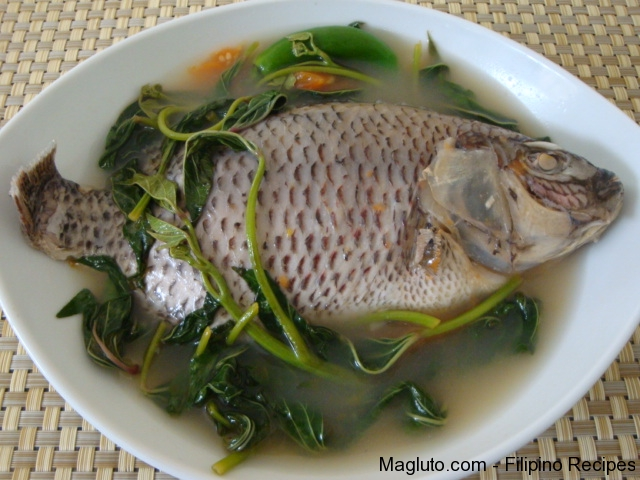
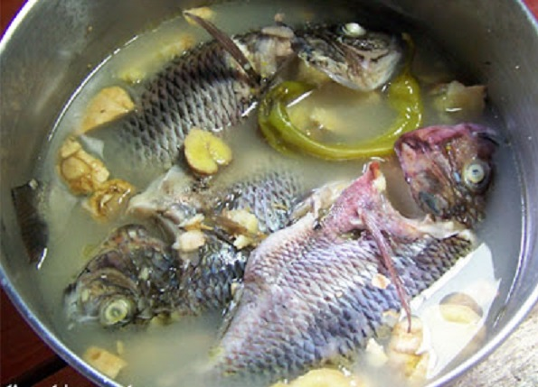
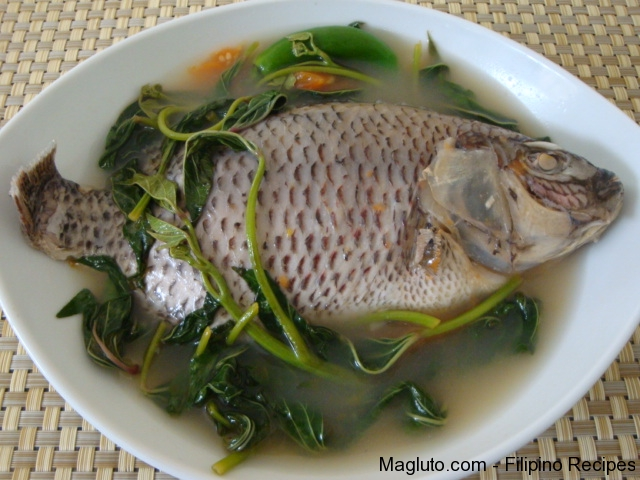
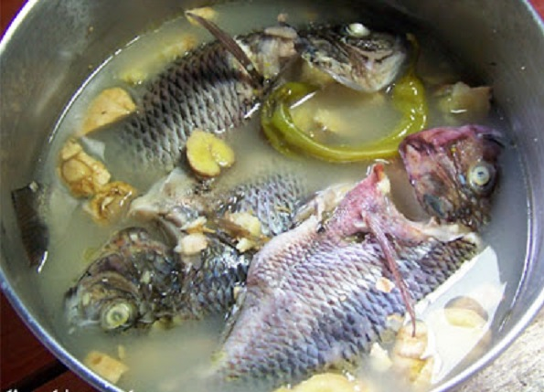

My Favorite Food
 



My favorite food is fried tilapia, sinigang na tilapia, and pinaksiw na tilapia because its so very delicious. Also tilapia is an easy to prepare and relatively inexpensive fish that many people enjoy eating even me, I’m always request it to my father to cook me fried tilapia, sinigang or paksiw na tilapia. Like what I said earlier that I don’t like any expensive things, I like inexpensive things like this because I can live in this world even without an expensive food or things.